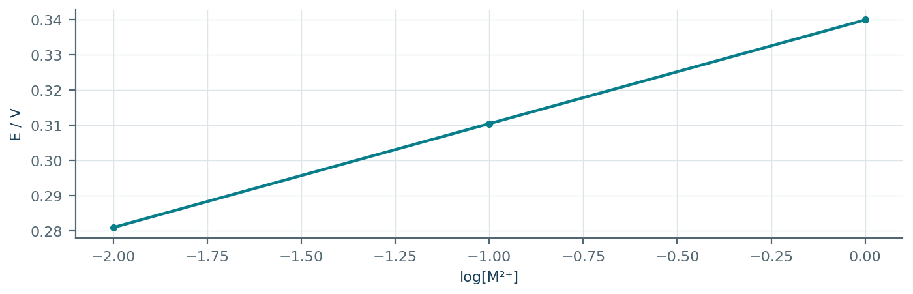
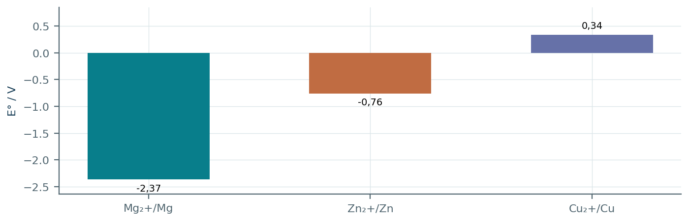
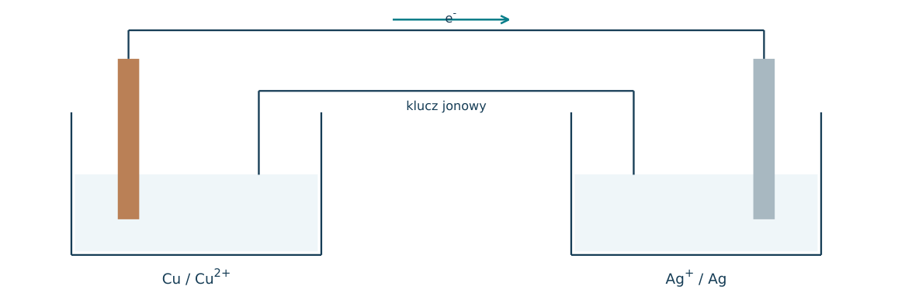
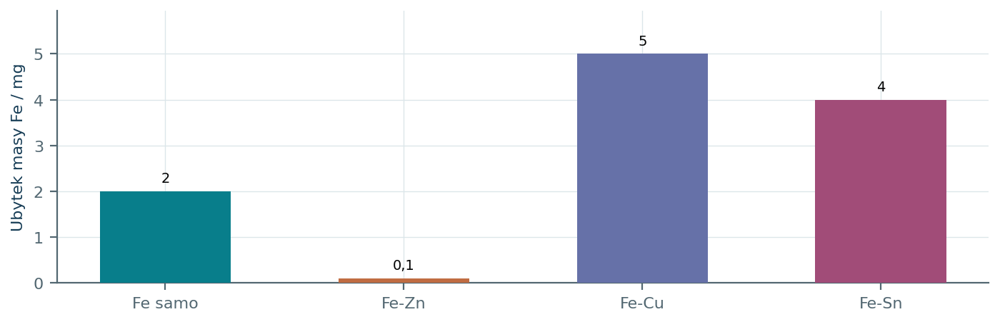
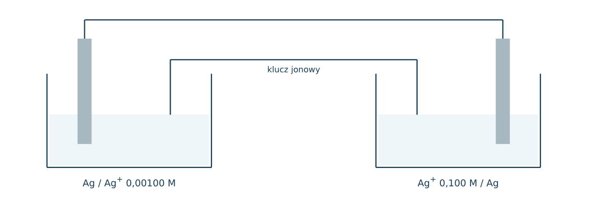
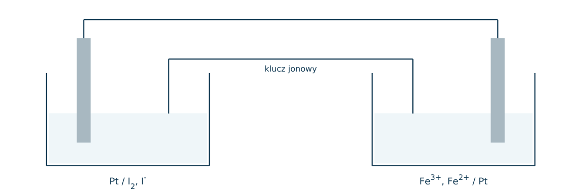
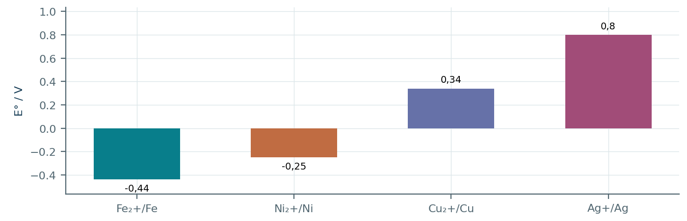
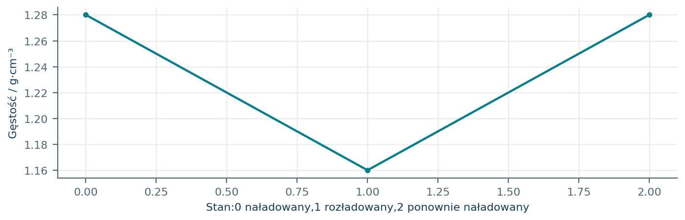
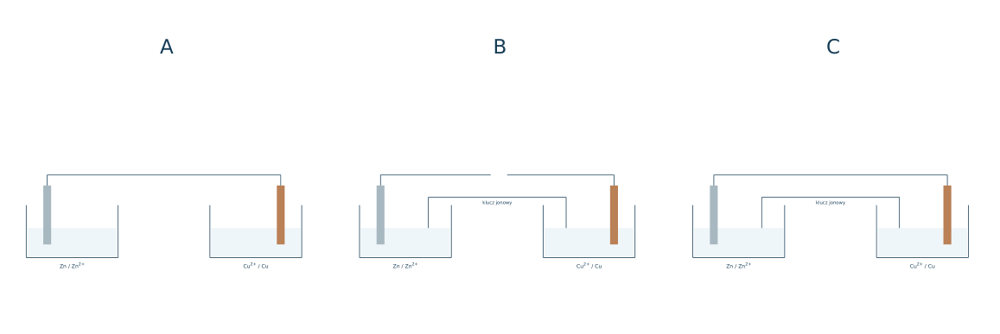

11.01 · 1 pkt
Zdefiniuj anodę i katodę, odwołując się do reakcji elektrodowych.
Rozwiązanie
- Anoda: utlenianie; katoda: redukcja.
50 zadań · 106 pkt · odpowiedzi rozwijane po samodzielnej próbie
← KatalogZadania PDFRozwiązania PDFDane do obliczeń: H 1; C 12; N 14; O 16; Na 23; Mg 24; Al 27; P 31; S 32; Cl 35,5; K 39; Ca 40; Cr 52; Mn 55; Fe 56; Cu 64; Zn 65; Ag 108; Br 80; I 127; Ba 137 (g/mol). NA = 6,02·1023 mol-1. Vm = 22,4 dm3/mol w warunkach normalnych (0°C, 1013 hPa). W 25°C Kw = 10-14. Dane podane w zadaniu mają pierwszeństwo.
Zdefiniuj anodę i katodę, odwołując się do reakcji elektrodowych.
Oceń zdania A i B, wpisując P albo F. Każde zdanie fałszywe popraw lub krótko uzasadnij. A: W pracującym ogniwie galwanicznym elektrony w przewodzie płyną od anody do katody. B: W kluczu elektrolitycznym ładunek przenoszą elektrony.
Napisz reakcje elektrodowe w ogniwie Zn/Zn2+ i Cu2+/Cu.
W którą stronę płyną elektrony w przewodzie zewnętrznym ogniwa Daniella?
Dlaczego potrzebny jest klucz elektrolityczny?
Czy elektrony przepływają przez klucz elektrolityczny tak jak przez przewód metalowy?
Zapisz schemat ogniwa, w którym Zn utlenia się, a Cu2+ redukuje. Oznacz bieguny.
Co dzieje się z masą elektrod Zn i Cu podczas pracy idealnego ogniwa Daniella?
W którą stronę migrują aniony klucza w ogniwie Daniella? Uzasadnij.
Jak zapisuje się SEM standardową ogniwa przy znanych potencjałach redukcyjnych?
Dla półogniw Zn2+/Zn: -0.76 V i Cu2+/Cu: +0.34 V ustal katodę i oblicz SEM standardową.
Dla półogniw Fe2+/Fe: -0.44 V i Ag+/Ag: +0.80 V ustal katodę i oblicz SEM standardową.
Dla półogniw Mg2+/Mg: -2.37 V i Cu2+/Cu: +0.34 V ustal katodę i oblicz SEM standardową.
Dla półogniw Zn2+/Zn: -0.76 V i Ag+/Ag: +0.80 V ustal katodę i oblicz SEM standardową.
Dla półogniw Fe2+/Fe: -0.44 V i Cu2+/Cu: +0.34 V ustal katodę i oblicz SEM standardową.
Dla półogniw Mg2+/Mg: -2.37 V i Zn2+/Zn: -0.76 V ustal katodę i oblicz SEM standardową.
Metal M ma E°(M2+/M)=-0,20 V, a Cu2+/Cu ma +0,34 V. Czy M wyprze miedź z roztworu CuSO4? Uzasadnij.
Dane: Ag+/Ag +0,80 V i Zn2+/Zn -0,76 V. Czy Ag rozpuści się w ZnSO4 z wydzieleniem Zn w warunkach standardowych?
Ogniwo składa się z półogniw Pt/Fe2+,Fe3+ (+0,77 V) i Cu/Cu2+ (+0,34 V). Podaj reakcję sumaryczną i SEM.
Dlaczego w półogniwie Fe3+/Fe2+ stosuje się elektrodę platynową?
Narysuj schemat ogniwa Zn/Zn2+ // H+/H2/Pt. Podaj proces katodowy.
Jak zmieni się SEM, jeśli odwrócisz kierunek zapisu reakcji całego ogniwa?
Czy podwojenie współczynników równania półreakcji podwaja potencjał standardowy?
Podczas pracy ogniwa ubyło 0,65 g Zn. Ile gramów Cu osadzi się na katodzie? M(Zn)=65, M(Cu)=64 g/mol.
W ogniwie Cu/Ag ubyło 0,64 g Cu. Oblicz przyrost masy Ag, M(Cu)=64, M(Ag)=108 g/mol.
Wyjaśnij, dlaczego kontakt żelaza z miedzią w wilgotnym środowisku przyspiesza korozję żelaza.
Dlaczego ocynkowanie chroni stal także przy niewielkim zarysowaniu powłoki?
Dlaczego uszkodzona powłoka cynowa może nasilić korozję żelaza?
Napisz anodową reakcję korozji Fe i katodową redukcję tlenu w wodzie obojętnej.
Zaplanuj porównanie korozji gwoździa w wodzie i roztworze NaCl. Podaj warunki stałe i oczekiwany wynik.
Wyjaśnij, jak malowanie chroni stal przed korozją.
Dane E°: Mg -2,37 V, Fe -0,44 V, Cu +0,34 V. Wybierz metal na anodę ochronną stalowego zbiornika.
Z informacji źródłowej: E=E°+(0,0592/2)log[M2+] w 25°C. O ile zmieni się potencjał M2+/M po stukrotnym wzroście stężenia?
Dwa półogniwa Cu2+/Cu mają stężenia 1,0 i 0,010 mol/dm3. Korzystając z E=E°+0,0296log[Cu2+], ustal katodę i SEM.
Źródło opisuje ogniwo paliwowe reakcjami 2H2→4H++4e- oraz O2+4H++4e-→2H2O. Zapisz reakcję sumaryczną i wskaż paliwo.
Czym różni się akumulator od ogniwa pierwotnego pod względem użytkowania?
Informacja: przy ładowaniu akumulatora zewnętrzne źródło wymusza reakcję odwrotną do rozładowania. Co dzieje się z energią i kierunkiem przemian chemicznych?
Dlaczego woltomierz o dużym oporze wewnętrznym jest odpowiedni do pomiaru SEM?
Z danych wynika, że cynk reaguje z HCl, a miedź nie. Wyjaśnij różnicę potencjałami: Zn -0,76 V, H+/H2 0,00 V, Cu +0,34 V.
Ogniwo Zn/Cu pracuje w warunkach standardowych: E°(Zn2+/Zn)=-0,76 V, E°(Cu2+/Cu)=+0,34 V. a) Narysuj schemat ogniwa z biegunami i przepływem elektronów. b) Zapisz półreakcje. c) Oblicz SEM. d) Po ubytku 1,30 g Zn oblicz przyrost masy Cu; M(Zn)=65, M(Cu)=64 g/mol.
Przykładowy rysunek rozwiązania znajduje się w PDF-ie z rozwiązaniami przy tym numerze.
Każdy numer 41-50 oznacza jedno zadanie główne; podpunkty są oceniane osobno.
Anodą jest Zn w 1,00 mol/dm3 Zn2+, E°=-0,760 V. SEM ogniwa wynosi 1,0705 V. Wykres opisuje katodę M2+/M: E=E°+0,0295 log[M2+]. Roztwór katodowy 500 cm3 sporządzono z 12,50 g MSO4·xH2O. Porównaj E°: Cu0,340 V, Ni-0,250 V.

11.41.1 (2 pkt) Ustal M i potencjał katody.
11.41.2 (1 pkt) Z równania odczytaj lub oblicz stężenie jonów w katodzie.
11.41.3 (2 pkt) Ustal wzór hydratu, M(CuSO4)=160 g/mol.
M=Cu z wyrazu wolnego E°=0,340 V; Ekat=1,0705-0,760=0,3105 V.
log[Cu2+]=(0,3105-0,340)/0,0295=-1; c=0,100 mol/dm3.
n=0,0500 mol, Mhydratu=12,50/0,0500=250; x=(250-160)/18=5, CuSO4·5H2O.
Wykres pokazuje E° trzech półogniw Mg2+/Mg, Zn2+/Zn, Cu2+/Cu. Dostępne są wszystkie trzy metale i ich roztwory o aktywnościach przyjętych jako standardowe. Zbuduj ogniwo o największej dodatniej SEM.

11.42.1 (2 pkt) Wybierz anodę i katodę oraz oblicz SEM.
11.42.2 (1 pkt) Napisz obie półreakcje i reakcję sumaryczną.
11.42.3 (1 pkt) Określ kierunek elektronów i rolę klucza elektrolitycznego.
AnodaMg, katodaCu; E°=0,34-(-2,37)=2,71 V.
Mg→Mg2++2e-; Cu2++2e-→Cu; Mg+Cu2+→Mg2++Cu.
Elektrony odMg doCu przewodem; klucz przewodzi jony i zapobiega narastaniu rozdzielenia ładunków.
Ogniwo Cu/Ag pracowało 300 s. Masa Cu zmalała o 0,0640 g, a masa Ag wzrosła o 0,216 g. Schemat pokazuje połączenie półogniw. Podano Q=n(e-)F oraz F=96500 C/mol; pomiń inne procesy elektrodowe.

11.43.1 (2 pkt) Sprawdź zgodność zmian mas z reakcją sumaryczną.
11.43.2 (1 pkt) Oblicz n elektronów i przepływający ładunek.
11.43.3 (1 pkt) Oblicz średnie natężenie I=Q/t i wskaż anodę.
Cu+2Ag+→Cu2++2Ag; nCu=0,00100 mol, nAg=0,00200 mol, zgodność 1: 2.
n(e-)=0,00200 mol; Q=193 C.
I=193/300≈0,643 A; anodaCu.
Identyczne gwoździe Fe umieszczono w roztworze NaCl, z takim samym dostępem tlenu. Niektóre dotykały blaszki innego metalu. Wykres pokazuje ubytek masy Fe w tym samym czasie i przy porównywalnych powierzchniach kontaktu.

11.44.1 (2 pkt) Wskaż układ chroniący Fe i nazwij zasadę działania.
11.44.2 (1 pkt) Wyjaśnij zwiększenie ubytku Fe w kontakcie z Cu.
11.44.3 (1 pkt) Dlaczego nienaruszona powłoka Sn może chronić, mimo niekorzystnego wyniku układu Fe-Sn po uszkodzeniu?
Fe-Zn; Zn jest anodą protektorową i utlenia się zamiast Fe.
Cu tworzy katodę lokalnego ogniwa, a Fe anodę, przyspieszając anodowe rozpuszczanie Fe.
Nienaruszona warstwa izoluje środowisko; po odsłonięciu Fe powstaje ogniwo z bardziej szlachetną Sn i korozja Fe nasila się.
Dwie elektrody Ag zanurzono w AgNO3: po lewej 0,00100 mol/dm3, po prawej 0,100 mol/dm3. W 25°C E=0,800+0,059 log[Ag+] V. Stężenia traktuj jako aktywności w przyjętym modelu.

11.45.1 (2 pkt) Oblicz potencjały i SEM ogniwa.
11.45.2 (1 pkt) Wskaż anodę, kierunek elektronów i zmianę masy lewej elektrody.
11.45.3 (1 pkt) Wyjaśnij, do jakiej zmiany różnicy stężeń prowadzi praca ogniwa.
Lewa 0,623 V, prawa 0,741 V; SEM=0,118 V.
Anoda po lewej, elektrony w prawo; masa lewejAg maleje.
Ag rozpuszcza się w roztworze rozcieńczonym i osadza z bardziej stężonego; różnica stężeń maleje.
Ogniwo zbudowano z obojętnych elektrod Pt. Po lewej I 2/I- o E°=0,540 V, po prawej Fe3+/Fe2+ o E°=0,770 V. Reagenty są w warunkach standardowych.

11.46.1 (2 pkt) Napisz reakcję sumaryczną i oblicz SEM.
11.46.2 (1 pkt) Zapisz schemat ogniwa z biegunami i wyjaśnij rolę Pt.
11.46.3 (1 pkt) Ile moli Fe3+ zużyje się, jeżeli przy anodzie powstanie 0,00500 mola I 2?
2Fe3++2I-→2Fe2++I 2; E°=0,230 V.
(-)Pt/I-, I 2//Fe3+, Fe2+/Pt(+); Pt przenosi elektrony, ale nie jest zużywany jako reagent.
0,0100 mola Fe3+.
Anoda Zn2+/Zn ma E°=-0,760 V. Katoda jest M2+/M, a SEM standardowa wynosi 0,320 V. Na wykresie podano możliwe potencjały M. Podczas pracy do katody dotarło 0,0400 mola elektronów.

11.47.1 (2 pkt) Ustal metal M, wykorzystując SEM, a nie położenie nazwy na wykresie.
11.47.2 (1 pkt) Oblicz masę osadzonego metalu.
11.47.3 (1 pkt) Dlaczego nie wolno pomnożyć E° przez dwa podczas równania liczby elektronów?
Ekat=0,320-0,760=-0,440 V; M=Fe.
nFe=0,0400/2=0,0200 mol; m=1,12 g.
Potencjał jest wielkością intensywną; mnożenie półreakcji nie zmienia E°.
Podano półreakcje: H2+2OH-→2H2O+2e- oraz O 2+2H2O+4e-→4OH-. Ogniwo zużyło 8,96 dm3 H2 w warunkach normalnych. Energia elektryczna stanowi 50% wartości energii spalania H2, przyjętej jako 286 kJ/mol.

11.48.1 (2 pkt) Zapisz reakcję sumaryczną i wskaż gaz dopływający do anody.
11.48.2 (1 pkt) Oblicz zużycie O 2 i ilość powstałej wody.
11.48.3 (1 pkt) Oblicz uzyskaną energię elektryczną w zadanym modelu.
2H2+O 2→2H2O; do anodyH2.
nH2=0,400 mol; nO2=0,200; nH2O=0,400 mol.
0,50·0,400·286=57,2 kJ.
Podczas rozładowania akumulatora zachodzi Pb+PbO2+2H2SO4→2PbSO4+2H2O. Ładowanie odwraca tę reakcję. Wykres pokazuje przykładową zmianę gęstości elektrolitu podczas obu etapów; zwiąż ją ze składem, nie z samym prądem.

11.49.1 (2 pkt) Wskaż, który Pb się utlenia, a który redukuje przy rozładowaniu.
11.49.2 (1 pkt) Oblicz zużycie H2SO4 i powstawanie PbSO4 po przereagowaniu 0,0100 mola Pb metalicznego.
11.49.3 (1 pkt) Wyjaśnij spadek gęstości przy rozładowaniu i wzrost przy ładowaniu.
Pb(0)→Pb(+II) w PbSO4: utlenianie; Pb(+IV) w PbO2→Pb(+II): redukcja.
H2SO4: 0,0200 mol; PbSO4: 0,0200 mol.
Rozładowanie zużywa kwas i tworzy wodę; ładowanie odtwarza kwas, zwiększając jego udział w elektrolicie.
Na rysunku trzy warianty tego samego ogniwa Zn/Cu: A ma przewód, lecz nie ma klucza; B ma klucz, ale otwarty przewód; C ma oba połączenia. Roztwory nie kontaktują się inną drogą.

11.50.1 (2 pkt) Wskaż wariant dający podtrzymany przepływ prądu i wyjaśnij oba pozostałe.
11.50.2 (1 pkt) Podaj kierunek ruchu elektronów w C i reakcję katodową.
11.50.3 (1 pkt) Czy w kluczu zamiast jonów przemieszczają się te same elektrony co w drucie?
C; A nie ma drogi transportu jonów i narasta rozdział ładunków, B nie ma zamkniętej drogi elektronów.
ElektronyZn→Cu; Cu2++2e-→Cu.
Nie; przewodnictwo w elektrolicie zapewniają jony, a w przewodzie metalicznym elektrony.